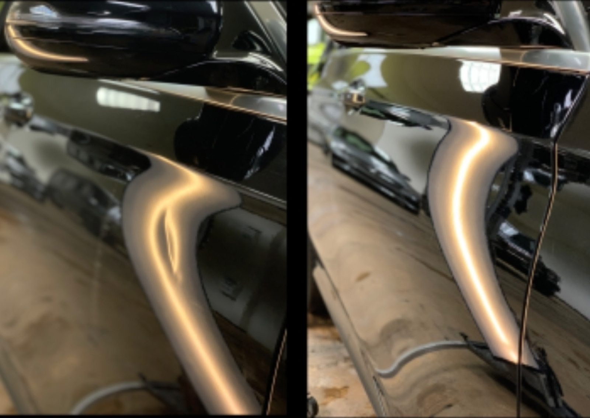

Hail damage repair
From dime-size to tennis-ball hail, restored to protect value. Hail repairs are booked for an in-person look.
- Dime to tennis-ball size
- In-person appointment
Dent removal · Kyle, TX
Hail damage, door dings, fender creases and plastic bumper dents, repaired without repainting or fillers.
Hail repair by appointment

What we do
Hail damage, dents and plastic bumpers, with no repaint and no filler.
From dime-size to tennis-ball hail, restored to protect value. Hail repairs are booked for an in-person look.

Door dings, fender creases and flat panel dents, taken out with no repaint and no fillers.
Dents come out of plastic bumpers too. Call or text for a quote.
How a repair goes
Door dings, dents and bumpers can be quoted by phone.
For hail damage we see the vehicle in person, so we set an appointment.
Single dings often take 10 to 40 minutes, with a waiting area on site.


4.9 · 44 Google reviews
Small dent at a crease in a Toyota Venza. Took him 10 minutes and was flawless. Tried to angle my vision in bright sunlight to see any remnant but there wasn’t any. Price great compared to others I got quotes from.
Had a door ding in a tricky spot. Came to T&M from Austin because of the good reviews and reasonable quote. They got me in and out very quickly and the car looks perfect.
Josh did amazing, he was super friendly greeted us right away, fixed our dent in about 40min while my kids played in the waiting area, highly recommend

About
T&M does one thing: take dents out of panels without repainting them. Hail damage, door dings, fender creases, flat panel dents and plastic bumpers.
The bay is white-walled and swept. There is a waiting area with chairs, and most single dings are done quickly.